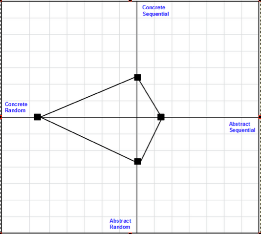

Date: September 12, 2014
 |
 |
 |
Before Dev Bootcamp students jump into Phase 0 there was prep work to be done, and to my joy, it was more than just installing software. With 3 weeks of Phase 0 under my belt it's time to reflect:
DBC Phase 0 has a stated aim of a max 20 hours of work per week. I tripled the week-1 mark. In week-2 I doubled it. This week I'm on track to go over by 50%. So...progress? Turns out I could have anticipated this challenge:
The third part of DBC's Personal Prep has students identify their "cognitive style," a.k.a. how you think, based on 4 styles:
My results were overwhelmingly in the Concrete Random camp, meaning I'm competitive, self-directed, hands-on, rarely accept outside authority, vehemently strong-willed, and above all want to cut through the shit to get to the point. Yep, all true.
So why the timesuck? Apparently CRs have trouble with pacing and working within time limits. I think back on my career where my work was always in on time, but more often than not, because I killed myself to get it done (and therefore be, the best). Competitive streak? Check.
From a blog post for parents of CR children I found these two gems:
"If I lay down a rule, he automatically wants to know the consequence. His brain starts running scenarios with loopholes. And then, he's going to measure if suffering the consequence is worth breaking the rule IF he doesn't like the rule. If it's a good rule (as evaluated by him) he'll follow, no problem."
This pretty much covers every conversation I've ever had with my boss. I also feel a sudden urge to call my mother and apologize.
"...teach him to spot self-serving, exploitative types who might pick up on this trait and use it to control your CR. Example: "You (adult sales CR guy), I'll bet you couldn't land that account." Then your CR spends less and less time with wife and kids becoming a workaholic to try to prove him wrong. The CR kid needs to know that this trait can be wrongly used to lock him down and jack up his life."
Certainly something I wish I learned earlier in life, having fallen victim here, too.
Overall I wish I had come across these profiling exercises earlier in my career (or at least before my office's layoff came down). It would have been enlightening to see what results my team had and what I could have done more effectively to teach/inspire/lead.
Understanding facets of ourselves, like how we learn, what we think is reasonable, and how we perceive, all help us get out of our own way when we're striving towards a goal or trying to connect with someone.
DBC points me to this article which provides a tidy summary of a Fixed vs. Growth mindset.
Here's a secret: My mind generates snap judgements when someone says, "Well, that's just the way it is." If a person has ever said this in an interview with me, they did not get the job. If someone on my team said this in a meeting we'd spend a long time talking about why. It shows resignation to powerlessness. Unwillingness to find another way. Pessimism. Fear.
"That's just the way it is," is the mantra of the "fixed" mindset. It reminds me of a trick I'd use when delegating to someone who did not seem keen on the task. I'd ask, "do you think it's possible we can XYZ?" (meet this goal, make this widget, effect this change, whatever). The conversation that ensued usually turned things around. Henry Ford was on target when he said, "Whether you think you can or whether you think you can't, you're right."
If you think you're going to fail, you've let yourself off the hook when you do. If you think you can't achieve something because "that's just the way it is," you won't. If you believe are just a [fill in the blank] kind of person, then you will not change. At some point everyone will try and fail, but the people who believe in possibility will get back up and try again.
The good news, is of course, that our brains, our thought process, our perceptions, and our reality is all malleable. If you think you can, you probably will, but not always immediately, and sometimes only with a hell of a lot of hard work.
So with a big lean into a growth mindset, I move into week-4 with the resolve to time-block future work accordingly.
How do you think? Send me an email and let me know.